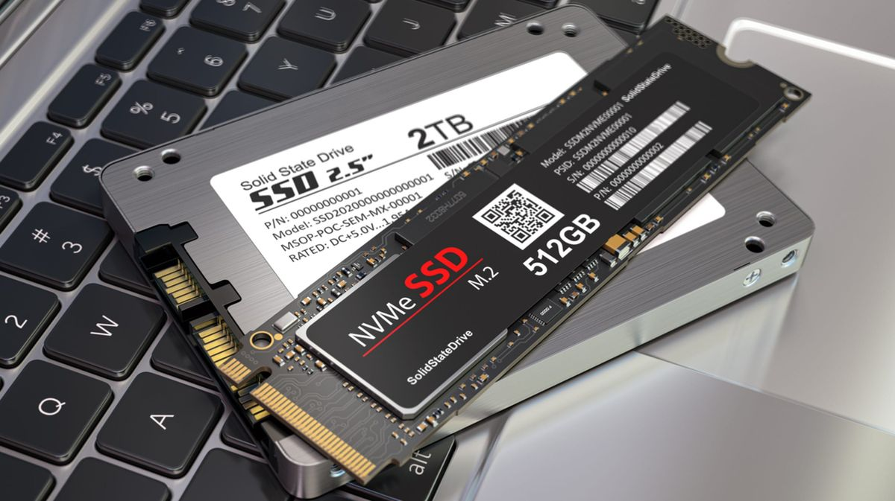

If your laptop takes minutes to boot, applications take a long time to open, and the system feels sluggish even when you are not running demanding programs, chances are it may still be using a traditional hard disk drive, commonly known as an HDD. While HDDs have been used in computers for many years, modern laptops increasingly use solid-state drives, or SSDs, because they provide significantly faster performance.
An SSD does not use spinning disks or mechanical moving parts. Instead, it stores data using flash memory, which allows the computer to access files much faster. For many older laptops, replacing an HDD with an SSD can be one of the most noticeable upgrades you can make without replacing the entire machine. Here is what you should know before deciding whether an SSD upgrade is worth the money.
HDD vs SSD: Key Differences
- Speed: SSDs are significantly faster than traditional HDDs. Windows can start more quickly, applications can open faster, and files can be accessed with less waiting. The exact improvement depends on the hardware and workload, but the difference is usually very noticeable.
- Durability: HDDs contain moving mechanical parts such as spinning platters and a read/write head. Because of these moving parts, they can be more vulnerable to physical shocks and vibrations. SSDs have no moving mechanical parts, making them better suited to laptops that are frequently moved around.
- Lifespan: Both HDDs and SSDs can provide years of reliable service when used properly. Modern SSDs are designed to handle many read and write operations, while HDDs can also last for a long time. However, any storage device can eventually fail, so keeping a backup of important files is always recommended.
- Price: HDDs generally provide more storage capacity for less money, especially when you need several terabytes. However, SSD prices have become much more affordable, making smaller and medium-capacity SSDs a practical choice for everyday laptop upgrades.
- Noise: Traditional HDDs can produce small mechanical sounds because their internal platters and moving components physically rotate. SSDs have no moving parts, so they operate silently.
- Power Consumption: SSDs generally consume less power than traditional mechanical HDDs. This can be useful in laptops because lower storage power consumption may help reduce battery usage during normal operation.
What a Real-World Upgrade Feels Like
One of the biggest advantages of upgrading from an HDD to an SSD is that the improvement is often noticeable immediately. Instead of waiting several minutes for Windows to become fully usable, the system can start much more quickly. Applications that previously took a long time to launch can also open noticeably faster.
Everyday tasks such as opening folders, searching for files, starting browsers, loading documents, and switching between applications can feel much smoother. This is especially useful for older laptops that still have a capable processor but feel slow because of their mechanical hard drive.
An SSD will not magically make every component in an old laptop faster. For example, a very old processor or insufficient RAM can still limit performance. However, if the HDD is the main bottleneck, replacing it with an SSD can make the computer feel significantly more responsive without requiring a complete laptop replacement.
How Much Storage Do You Need?
Choosing the right SSD capacity depends on how you use your laptop. For basic activities such as web browsing, office work, online classes, programming, and everyday applications, a 256GB SSD may be enough for some users. However, a 512GB SSD provides more comfortable space for Windows, applications, documents, photos, and other everyday files.
If you regularly work with large video files, games, high-resolution photos, or other large projects, you may want to consider a 1TB SSD or larger. Another option is to keep the operating system and frequently used applications on the SSD while storing large media files on an external storage device.
Before buying an SSD, it is also important to check which type of storage your laptop supports. Some laptops use a 2.5-inch SATA drive, while newer laptops may use an M.2 NVMe SSD. The physical size, connector, and compatibility should be checked before purchasing an upgrade.
Should You Upgrade or Buy a New Laptop?
If your laptop is otherwise working properly and the main problem is slow storage, upgrading to an SSD can be a much more affordable option than purchasing a new computer. A laptop with an older processor can still become much more enjoyable to use after replacing a slow HDD.
However, an SSD upgrade may not be enough if your laptop has multiple hardware problems, very limited RAM, a failing motherboard, a damaged display, or an outdated processor that cannot handle your everyday workload. In such cases, comparing the total repair and upgrade cost with the price of a newer laptop makes more sense.
If you are unsure whether your laptop is suitable for an SSD upgrade, a technician can check the current hardware and recommend the most suitable storage option. This can help you avoid purchasing an incompatible drive or spending money on an upgrade that will not solve the actual performance problem.
What Happens to Your Existing Data?
Many users hesitate to replace their HDD because they are worried about losing Windows, applications, documents, photos, and other personal files. Fortunately, it is possible to clone the contents of an existing drive to a new SSD in many upgrade situations.
Drive cloning creates a copy of the existing storage so that your operating system, applications, settings, and files can be transferred to the new drive. This means you may not need to manually reinstall everything from scratch. The exact process depends on the laptop, drive type, storage capacity, and condition of the existing drive.
Before any cloning or hardware replacement process, important personal files should still be backed up. If the old HDD is already showing signs of failure, cloning may not always be successful, so professional assistance can help protect your data and determine the safest upgrade method.
Tip: If your laptop is still using an HDD and feels slow, an SSD upgrade can be one of the most effective ways to improve everyday performance. We can check your laptop's compatibility and clone your existing drive to the new SSD so you can keep your data, programs, and files without unnecessary re-installation work.
Before purchasing an SSD, get your laptop checked to confirm the correct SSD type, storage capacity, and upgrade method. A professional installation can help ensure that your new drive is installed correctly and your existing data is handled safely.